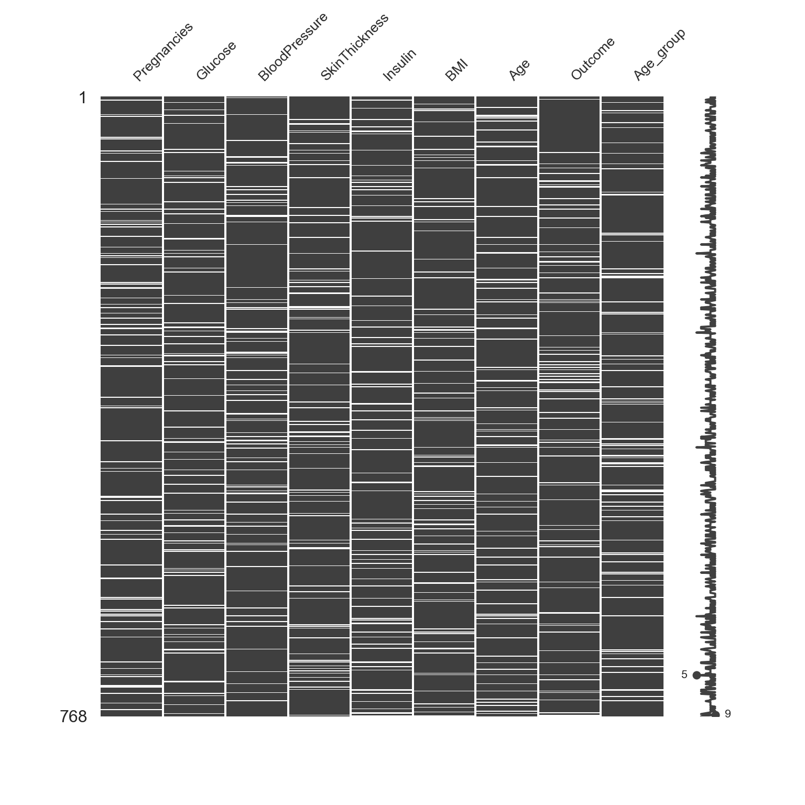
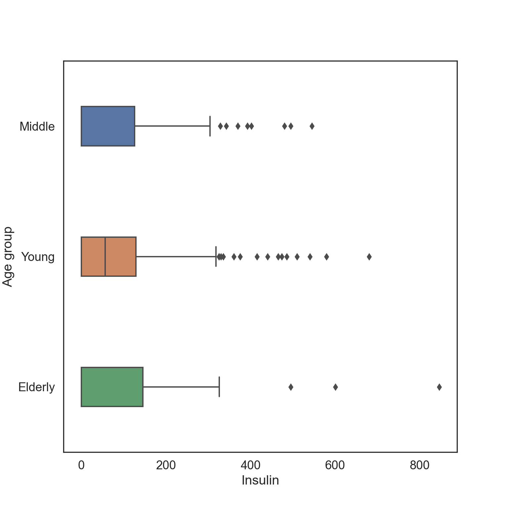
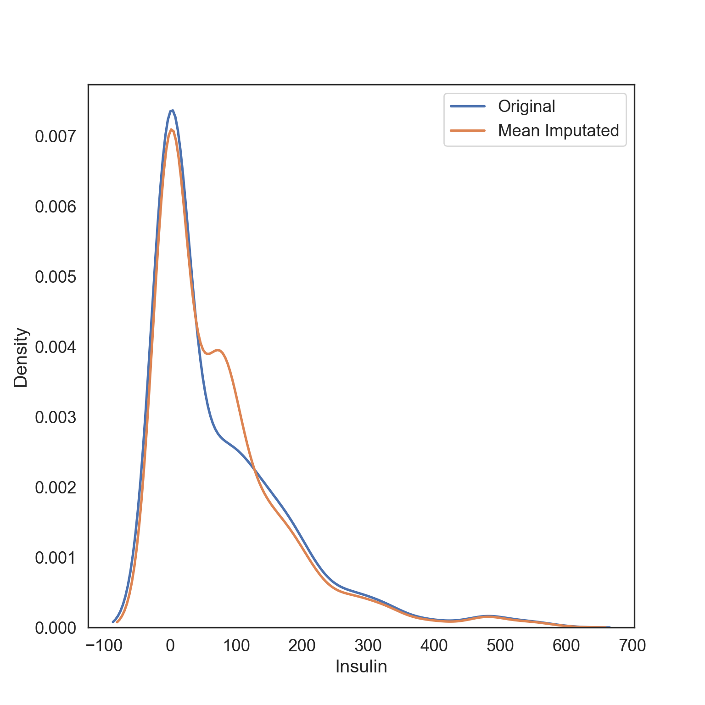
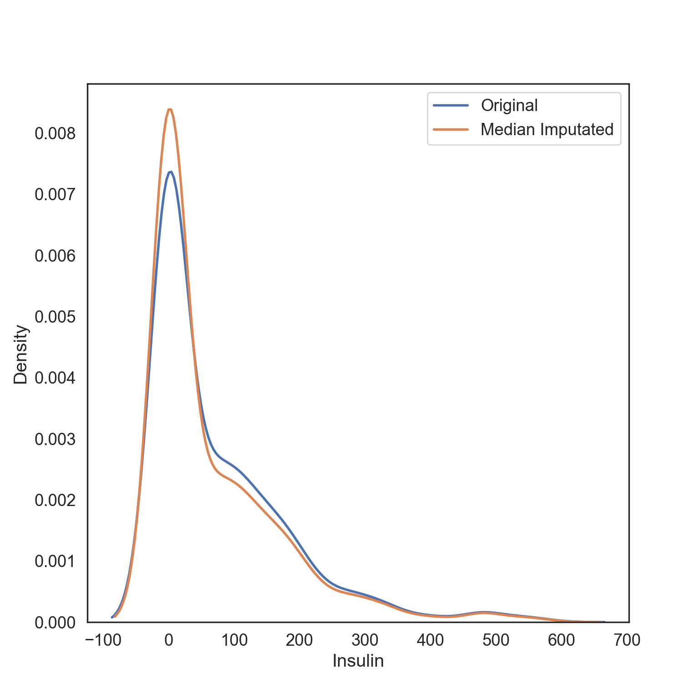
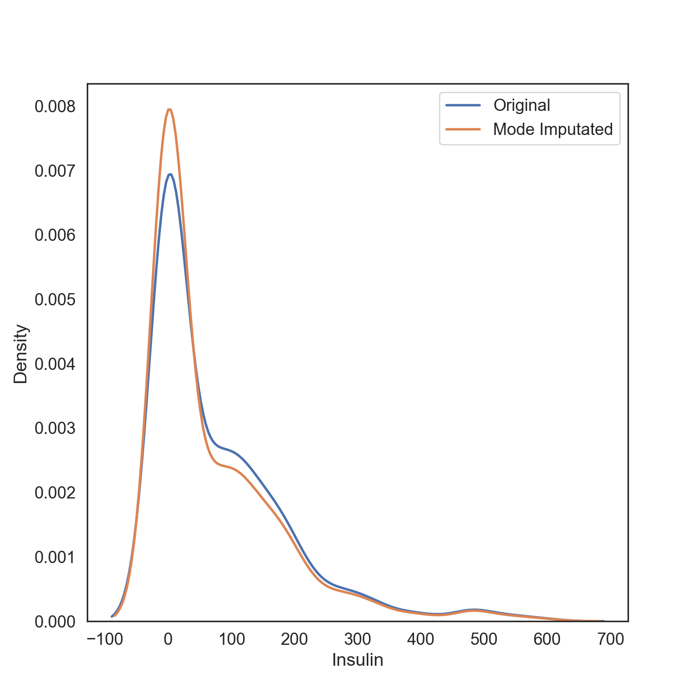
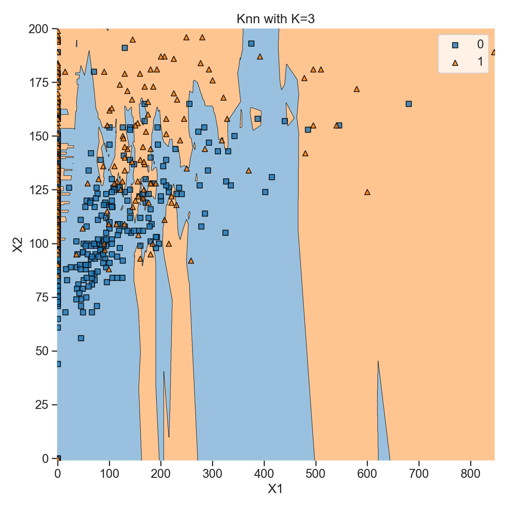
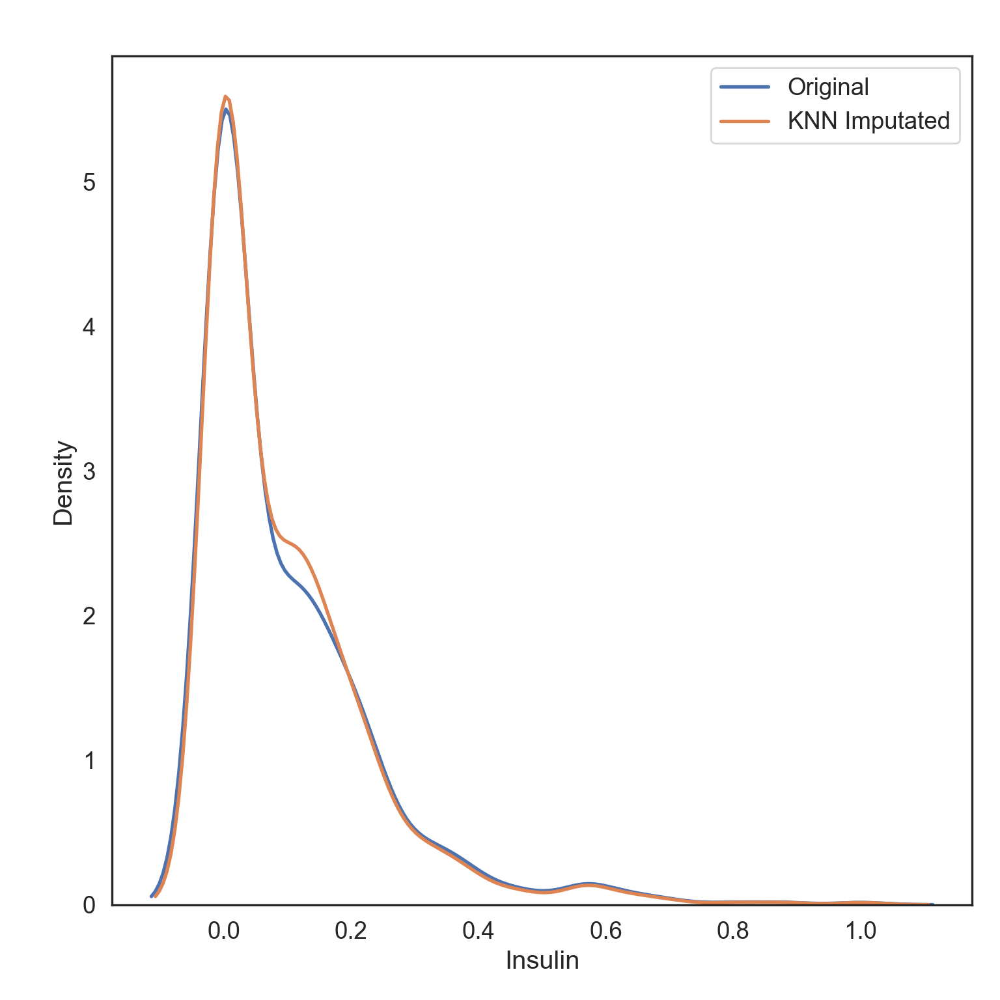
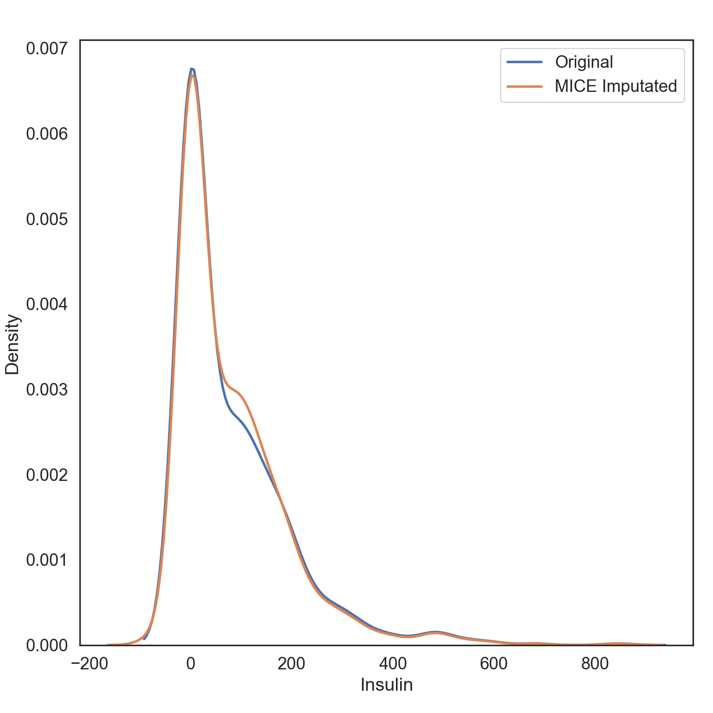

# Import all required libraries
# Data analysis and manipulation
import pandas as pd
# Working with arrays
import numpy as np
# Statistical visualization
import seaborn as sns
# Matlab plotting for Python
import matplotlib.pyplot as plt
# Data analysis
import statistics as stat
import scipy.stats as stats
# Visualizing missing values
import missingno as msno
# Statistical modeling
import statsmodels.api as smx
# Predictive data analysis: process data
from sklearn import preprocessing as pproc
# Predictive data analysis: outlier imputation
from sklearn.impute import SimpleImputer
# Predictive data analysis: KNN NA imputation
from sklearn.impute import KNNImputer
# Predictive data analysis: experimental iterative NA imputer (MICE)
from sklearn.experimental import enable_iterative_imputer
from sklearn.impute import IterativeImputer
# Predictive data analysis: linear models
from sklearn.linear_model import LinearRegression
# Predictive data analysis: Classifying nearest neighbors
from sklearn import neighbors
# Predictive data analysis: Plotting decision regions
from mlxtend.plotting import plot_decision_regions
# Increase font size of all seaborn plot elements
sns.set(font_scale = 1.5, rc = {'figure.figsize':(8, 8)})
# Change theme to "white"
sns.set_style("white")Imputing like a Data Scientist
Purpose of this chapter
Exploring, visualizing, and imputing outliers and missing values (NAs) in a novel data set
IMPORTANT NOTE: imputation should only be used when missing data is unavoidable and probably limited to 10% of your data being outliers / missing data (though some argue imputation is necessary between 30-60%). Ask what the cause is for the outlier and missing data.
Take-aways
- Load and explore a data set with publication quality tables
- Thoroughly diagnose outliers and missing values
- Impute outliers and missing values
Required Setup
We first need to prepare our environment with the necessary libraries and set a global theme for publishable plots in seaborn.
Load and Examine a Data Set
# Read csv
data = pd.read_csv("data/diabetes.csv")
# Create Age_group from the age column
def Age_group_data(data):
if data.Age >= 21 and data.Age <= 30: return "Young"
elif data.Age > 30 and data.Age <= 50: return "Middle"
else: return "Elderly"
# Apply the function to data
data['Age_group'] = data.apply(Age_group_data, axis = 1)
# What does the data look like
data.head() Pregnancies Glucose BloodPressure ... Age Outcome Age_group
0 6 148 72 ... 50 1 Middle
1 1 85 66 ... 31 0 Middle
2 8 183 64 ... 32 1 Middle
3 1 89 66 ... 21 0 Young
4 0 137 40 ... 33 1 Middle
[5 rows x 10 columns]Diagnose your Data
# What are the properties of the data
diagnose = data.info()<class 'pandas.core.frame.DataFrame'>
RangeIndex: 768 entries, 0 to 767
Data columns (total 10 columns):
# Column Non-Null Count Dtype
--- ------ -------------- -----
0 Pregnancies 768 non-null int64
1 Glucose 768 non-null int64
2 BloodPressure 768 non-null int64
3 SkinThickness 768 non-null int64
4 Insulin 768 non-null int64
5 BMI 768 non-null float64
6 DiabetesPedigreeFunction 768 non-null float64
7 Age 768 non-null int64
8 Outcome 768 non-null int64
9 Age_group 768 non-null object
dtypes: float64(2), int64(7), object(1)
memory usage: 60.1+ KBColumn: name of each variableNon-Null Count: number of missing valuesDType: data type of each variable
Diagnose Outliers
There are several numerical variables that have outliers above, let’s see what the data look like with and without them
Create a table with columns containing outliers
Plot outliers in a box plot and histogram
# Make a copy of the data
dataCopy = data.copy()
# Select only numerical columns
dataRed = dataCopy.select_dtypes(include = np.number)
# List of numerical columns
dataRedColsList = dataRed.columns[...]
# For all values in the numerical column list from above
for i_col in dataRedColsList:
# List of the values in i_col
dataRed_i = dataRed.loc[:,i_col]
# Define the 25th and 75th percentiles
q25, q75 = round((dataRed_i.quantile(q = 0.25)), 3), round((dataRed_i.quantile(q = 0.75)), 3)
# Define the interquartile range from the 25th and 75th percentiles defined above
IQR = round((q75 - q25), 3)
# Calculate the outlier cutoff
cut_off = IQR * 1.5
# Define lower and upper cut-offs
lower, upper = round((q25 - cut_off), 3), round((q75 + cut_off), 3)
# Print the values
print(' ')
# For each value of i_col, print the 25th and 75th percentiles and IQR
print(i_col, 'q25=', q25, 'q75=', q75, 'IQR=', IQR)
# Print the lower and upper cut-offs
print('lower, upper:', lower, upper)
# Count the number of outliers outside the (lower, upper) limits, print that value
print('Number of Outliers: ', dataRed_i[(dataRed_i < lower) | (dataRed_i > upper)].count())
Pregnancies q25= 1.0 q75= 6.0 IQR= 5.0
lower, upper: -6.5 13.5
Number of Outliers: 4
Glucose q25= 99.0 q75= 140.25 IQR= 41.25
lower, upper: 37.125 202.125
Number of Outliers: 5
BloodPressure q25= 62.0 q75= 80.0 IQR= 18.0
lower, upper: 35.0 107.0
Number of Outliers: 45
SkinThickness q25= 0.0 q75= 32.0 IQR= 32.0
lower, upper: -48.0 80.0
Number of Outliers: 1
Insulin q25= 0.0 q75= 127.25 IQR= 127.25
lower, upper: -190.875 318.125
Number of Outliers: 34
BMI q25= 27.3 q75= 36.6 IQR= 9.3
lower, upper: 13.35 50.55
Number of Outliers: 19
DiabetesPedigreeFunction q25= 0.244 q75= 0.626 IQR= 0.382
lower, upper: -0.329 1.199
Number of Outliers: 29
Age q25= 24.0 q75= 41.0 IQR= 17.0
lower, upper: -1.5 66.5
Number of Outliers: 9
Outcome q25= 0.0 q75= 1.0 IQR= 1.0
lower, upper: -1.5 2.5
Number of Outliers: 0q25: 1/4 quartile, 25th percentileq75: 3/4 quartile, 75th percentileIQR: interquartile range (q75-q25)lower: lower limit of \(1.5*IQR\) used to calculate outliersupper: upper limit of \(1.5*IQR\) used to calculate outliers
Basic Exploration of Missing Values (NAs)
- Table showing the extent of NAs in columns containing them
dataNA = data
for col in dataNA.columns:
dataNA.loc[dataNA.sample(frac = 0.1).index, col] = np.nan
dataNA.isnull().sum()Pregnancies 77
Glucose 77
BloodPressure 77
SkinThickness 77
Insulin 77
BMI 77
DiabetesPedigreeFunction 77
Age 77
Outcome 77
Age_group 77
dtype: int64Bar plot showing all NA values in each column. Since we randomly produced a set amount above the numbers will all be the same.
msno.bar(dataNA, figsize = (8, 8), fontsize = 10)
plt.tight_layout()Advanced Exploration of Missing Values (NAs)
This matrix shows the number of missing values throughout each column.
X-axis is the column names
Left Y-axis is the row number
Right Y-axis is a line plot that shows each row’s completeness, e.g., if there are 11 columns, 4-10 valid values means that there are 1-7 missing values in a row.
dataNA1 = dataNA.drop('DiabetesPedigreeFunction', axis = "columns")
# NA matric
msno.matrix(dataNA1, figsize = (8, 8), fontsize = 10)
Impute Outliers
Removing outliers and NAs can be tricky, but there are methods to do so. I will go over several, and discuss benefits and costs to each.
The principle goal for all imputation is to find the method that does not change the distribution too much (or oddly).
Classifying Outliers
Before imputing outliers, you will want to diagnose whether it’s they are natural outliers or not. We will be looking at “Insulin” for example across Age_group, because there are several outliers and NAs, which we will impute below.
# Increase font size of all seaborn plot elements
sns.set(font_scale = 1.25, rc = {'figure.figsize':(6, 8)})
# Change theme to "white"
sns.set_style("white")
# Box plot
Age_Box = sns.boxplot(data = data, x = "Insulin", y = "Age_group", width = 0.3)
# Tweak the visual presentation
Age_Box.set(ylabel = "Age group")
Now let’s say that we want to impute extreme values and remove outliers that don’t make sense, such as Insulin levels > 600 mg/dL: values greater than this induce a diabetic coma.
We remove outliers using SimpleImputer from sklearn and replace them with values that are estimates based on the existing data
- Mean: arithmetic mean
- Median: median
- Mode: mode
- Capping: Impute the upper outliers with 95 percentile, and impute the bottom outliers with 5 percentile - aka Winsorizing
# Select only Insulin
InsMod = data.filter(["Insulin"], axis = "columns")Mean Imputation
The mean of the observed values for each variable is computed and the outliers for that variable are imputed by this mean
# Python can't impute outliers easily, so we will convert them to NAs and imputate them
InsMod.loc[InsMod.Insulin > 600, 'Insulin'] = np.nan
# Set mean imputation algorithm
Mean_Impute = SimpleImputer(missing_values = np.nan, strategy = 'mean')
# Fit imputation
Mean_Impute = Mean_Impute.fit(InsMod[['Insulin']])
# Transform NAs with the mean imputation
InsMod['Ins_Mean'] = Mean_Impute.transform(InsMod[['Insulin']])# Visualization of the mean imputation
# Original data
mean_plot = sns.kdeplot(data = InsMod, x = 'Insulin', linewidth = 2, label = "Original")
# Mean imputation
mean_plot = sns.kdeplot(data = InsMod, x = 'Ins_Mean', linewidth = 2, label = "Mean Imputated")
# Show legend
plt.legend()
# Show plot
plt.show()
Median Imputation
The median of the observed values for each variable is computed and the outliers for that variable are imputed by this median
# Python can't impute outliers easily, so we will convert them to NAs and imputate them
InsMod.loc[InsMod.Insulin > 600, 'Insulin'] = np.nan
# Set median imputation algorithm
Median_Impute = SimpleImputer(missing_values = np.nan, strategy = 'median')
# Fit imputation
Median_Impute = Median_Impute.fit(InsMod[['Insulin']])
# Transform NAs with the median imputation
InsMod['Ins_Median'] = Median_Impute.transform(InsMod[['Insulin']])# Visualization of the median imputation
# Original data
median_plot = sns.kdeplot(data = InsMod, x = 'Insulin', linewidth = 2, label = "Original")
# Median imputation
median_plot = sns.kdeplot(data = InsMod, x = 'Ins_Median', linewidth = 2, label = "Median Imputated")
# Show legend
plt.legend()
# Show plot
plt.show()
Pros & Cons of Using the Mean or Median Imputation
Pros:
- Easy and fast.
- Works well with small numerical datasets.
Cons:
- Doesn’t factor the correlations between features. It only works on the column level.
- Will give poor results on encoded categorical features (do NOT use it on categorical features).
- Not very accurate.
- Doesn’t account for the uncertainty in the imputations.
Mode Imputation
The mode of the observed values for each variable is computed and the outliers for that variable are imputed by this mode
# Python can't impute outliers easily, so we will convert them to NAs and imputate them
InsMod.loc[InsMod.Insulin > 600, 'Insulin'] = np.nan
# Set mode imputation algorithm
Mode_Impute = SimpleImputer(missing_values = np.nan, strategy = 'most_frequent')
# Fit imputation
Mode_Impute = Mode_Impute.fit(InsMod[['Insulin']])
# Transform NAs with the mode imputation
InsMod['Ins_Mode'] = Mode_Impute.transform(InsMod[['Insulin']])# Visualization of the mode imputation
# Original data
mode_plot = sns.kdeplot(data = InsMod, x = 'Insulin', linewidth = 2, label = "Original")
# Mode imputation
mode_plot = sns.kdeplot(data = InsMod, x = 'Ins_Mode', linewidth = 2, label = "Mode Imputated")
# Show legend
plt.legend()
# Show plot
plt.show()
Pros & Cons of Using the Mode Imputation
Pros:
- Works well with categorical features.
Cons:
It also doesn’t factor the correlations between features.
It can introduce bias in the data.
Capping Imputation (aka Winsorizing)
The Percentile Capping is a method of Imputing the outlier values by replacing those observations outside the lower limit with the value of 5th percentile and those that lie above the upper limit, with the value of 95th percentile of the same dataset.
# Winsorizing deals specifically with outliers, so we don't have to worry about changing outliers to NAs
# New column for capping imputated data at the lowest and highest 10% of values
InsMod['Ins_Cap'] = pd.DataFrame(stats.mstats.winsorize(InsMod['Insulin'], limits = [0.05, 0.05]))# Visualization of the capping imputation
# Original data
cap_plot = sns.kdeplot(data = InsMod, x = 'Insulin', linewidth = 2, label = "Original")
# Capping imputation
cap_plot = sns.kdeplot(data = InsMod, x = 'Ins_Cap', linewidth = 2, label = "Capping Imputated")
# Show legend
plt.legend()
# Show plot
plt.show()
Pros and Cons of Capping
Pros:
- Not influenced by extreme values
Cons:
Capping only modifies the smallest and largest values slightly. This is generally not a good idea since it means we’re just modifying data values for the sake of modifications.
If no extreme outliers are present, Winsorization may be unnecessary.
Imputing NAs
I will only be addressing a subset of methods for NA imputation, but you can use the mean, median, and mode methods from above as well:
- KNN: K-nearest neighbors
- MICE: Multivariate Imputation by Chained Equations
Since our normal data has no NA values, we will add the Insulin column from the dataNA we created earlier and replace the original with it.
# Make a copy of the data
dataCopy = data.copy()
# Select the Insulin
InsNA = dataNA.filter(["Insulin"], axis = "columns")
# Add Insulin with NAs to copy of original data
dataCopy['Insulin'] = InsNAK-Nearest Neighbor (KNN) Imputation
KNN is a machine learning algorithm that classifies data by similarity. This in effect clusters data into similar groups. The algorithm predicts values of new data to replace NA values based on how closely they resembles training data points, such as by comparing across other columns.
Here’s a visual example using the plot_decision_regions function from mlxtend.plotting library to run a KNN algorithm on our dataset, where three clusters are created by the algorithm.
# KNN plot function
def knn_comparision(data, k):
# Define x and y values (your data will need to have these)
X = data[['x1','x2']].values
y = data['y'].astype(int).values
# Knn function, defining the number of neighbors
clf = neighbors.KNeighborsClassifier(n_neighbors = k)
# Fit knn algorithm to data
clf.fit(X, y)
# Plotting decision regions
plot_decision_regions(X, y, clf = clf, legend = 2)
# Adding axes annotations
plt.xlabel('X1')
plt.ylabel('X2')
plt.title('Knn with K='+ str(k))
plt.legend(loc = 'upper right')
plt.tight_layout()
plt.show()# Prepare data for the KNN plotting function
data1 = data.loc[:, ['Insulin', 'Glucose', 'Outcome']]
# Drop NAs
data1 = data1.dropna()
# Set the two target x variables and the binary y variable we are clustering the data from
data1 = data1.rename(columns = {'Insulin': 'x1', 'Glucose': 'x2', 'Outcome': 'y'})
# Create KNN plot for 3 nearest neighbors
knn_comparision(data1, 3)
You can also loop the KNN plots for i nearest neighbors:
# Loop to create KNN plots for i number of nearest neighbors
for i in [1, 5, 15]:
knn_comparision(data1, i)Note, we have to change a three things to make KNNImputer work correctly:
- We need to change any characters, into dummy variables that are numericals, because scalars and imputers do not recognize characters. In this case,
Age_groupis an ordinal category, so we will useOrdinalEncoderfromScikit-learn, specifically inpreprocessingwhich we imported aspproc.
# Numeric dummy variable from our Age_group ordinal column
# Define the orginal encoder
enc = pproc.OrdinalEncoder()
# Ordinal variable from Age_group column
dataCopy[['Age_group']] = enc.fit_transform(dataCopy[['Age_group']])- We need to reorder our target column with NAs to the end of the dataframe so that the rest of the dataframe can be called as training data more easily.
# Reorder columns
dataCopy = dataCopy[['Pregnancies', 'Glucose', 'BloodPressure', 'SkinThickness', "BMI", "DiabetesPedigreeFunction", "Age", "Outcome", "Age_group", "Insulin"]]KNNImputateris distance-based so we need to normalize our data. OtherwiseKNNImputerwill create biased replacement. We will use thepproc.MinMaxScalerfromScikit-learn, which scales our values from 0-1.
# Min-max schaler
scaler = pproc.MinMaxScaler()
# Scale columns
dataCopy_Scale = pd.DataFrame(scaler.fit_transform(dataCopy), columns = dataCopy.columns)We are finally ready to for KNN Imputation!
# Set KNN imputation function parameters
imputer = KNNImputer(n_neighbors = 3)
# Fit imputation
DataKnn = pd.DataFrame(imputer.fit_transform(dataCopy_Scale),columns = dataCopy_Scale.columns)# Add KNN imputated column to original dataCopy
dataCopy_Scale[['InsKnn']] = DataKnn[['Insulin']]
# Visualization of the KNN imputation
# Original data
knn_plot = sns.kdeplot(data = dataCopy_Scale, x = 'Insulin', linewidth = 2, label = "Original")
# KNN imputation
knn_plot = sns.kdeplot(data = dataCopy_Scale, x = 'InsKnn', linewidth = 2, label = "KNN Imputated")
# Show legend
plt.legend()
# Show plot
plt.show()
Pros & Cons of Using KNN Imputation
Pro:
- Possibly much more accurate than mean, median, or mode imputation for some data sets.
Cons:
KNN is computationally expensive because it stores the entire training dataset into computer memory.
KNN is very sensitive to outliers, so you would have to imputate these first.
Multivariate Imputation by Chained Equations (MICE)
MICE is an algorithm that fills missing values multiple times, hence dealing with uncertainty better than other methods. This approach creates multiple copies of the data that can then be analyzed and then pooled into a single dataset.

# Assign a regression model
lm = LinearRegression()
# Set MICE imputation function parameters
imputer = IterativeImputer(estimator = lm, missing_values = np.nan, max_iter = 10, verbose = 2, imputation_order = 'roman', random_state = 0)
# Fit imputation
dataMice = pd.DataFrame(imputer.fit_transform(dataCopy),columns = dataCopy.columns)# Add MICE imputated column to original dataCopy
dataCopy[['InsMice']] = dataMice[['Insulin']]
# Visualization of the MICE imputation
# Original data
mice_plot = sns.kdeplot(data = dataCopy, x = 'Insulin', linewidth = 2, label = "Original")
# MICE imputation
mice_plot = sns.kdeplot(data = dataCopy, x = 'InsMice', linewidth = 2, label = "MICE Imputated")
# Show legend
plt.legend()
# Show plot
plt.show()
Pros & Cons of MICE Imputation
Pros:
Multiple imputations are more accurate than a single imputation.
The chained equations are very flexible to data types, such as categorical and ordinal.
Cons:
- You have to round the results for ordinal data because resulting data points are too great or too small (floating-points).